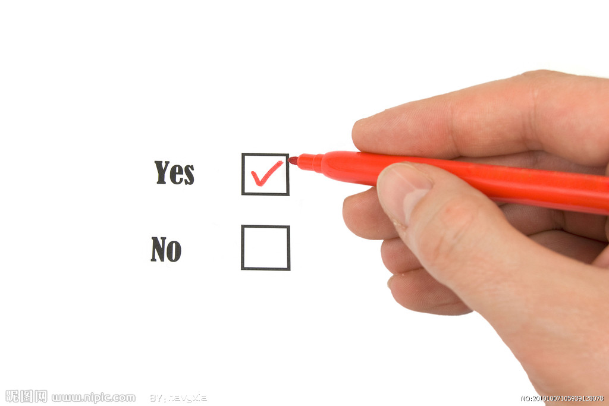

昨天的雨特别的大，淹没了街道，漫进了宿舍，路上基本上是熄火的车！这场大雨到今天早上还在
下，现在它刚刚休息一会，不知道还来不来！
昨天晚上是一个难忘的夜晚，几个人顶着一把伞，在过膝的雨水中冲刷！雨水洗掉了一天的疲惫！
早上来到教室，米老师出题，我们所有人都在思考一个问题，昨天有人拿了你的伞怎么办？
是啊，有人拿了我的伞怎么办？有下面几个情况：
1， 大家都是兄弟姐妹，随便再拿一把
2， 这么大雨和别人挤一把
3， 跑着回去吧，认倒霉
4，找别人看有多余的吗

世界上没有什么难事，难得是选择，正如今天米老师的现身说法，难吗？难的是选择！选择帮助别
人或者什么事都高高挂起。选择了帮助，有可能一无所获，有可能迎来的是一份真挚的感情，不帮助别人，
我们只能在感叹世态炎凉中生活下去！
答案因人而异，如果是我，我会选择帮助，但是不是所有的人，所有的事，合适的人，合适的时间，合适
的事情，对于我来说是合适的能力，我会帮助，昨天晚上我们大部分人是挤着回去的，我感觉很感动！
挤着回去：1，不会让别人因为没有伞而愁
2，不会扰乱秩序
3，在路上互相帮助
我感觉这不仅仅是选择伞的问题了，这只是一个表象，重要的是选择，人生有很多选择，面对这些岔
口我们怎么走，决定我们能走多远，多高！
选择无所谓对错，让自己快乐，给别人一份快乐就行！客观的说，选择帮助的人会很大希望迎来一份
真挚的感情，放弃帮助的人肯定迎来的是世态炎凉，一个很久简单的概率问题，大家心里都清楚！